Agua, memoria y comunidad.
Una lectura de San Andrés de Tupicocha para comprender las relaciones entre territorio, patrimonio y gestión del agua.
Síntesis territorial · actualizada el 6 de noviembre de 2026
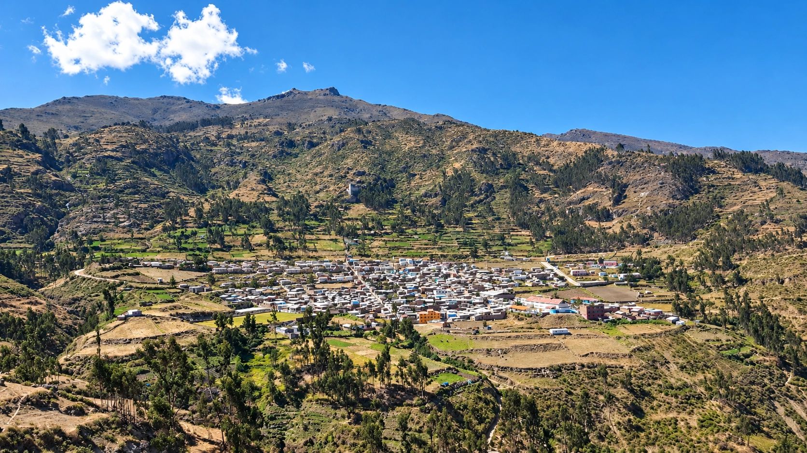
Pueblo, distrito y organización comunal
En Tupicocha, el cuidado del agua reúne a la comunidad campesina y a las instituciones públicas.
Ampliar la lectura
El pueblo es la capital del distrito. El distrito abarca el territorio al que corresponden las cifras censales del visor. La comunidad campesina tiene su propia organización y participa en el manejo colectivo de la tierra y el agua.
El Ministerio de Cultura documentó en 2018 diez parcialidades o ayllus en Tupicocha, grupos que se organizan para realizar trabajos de infraestructura. El mantenimiento de canales y amunas mediante faenas muestra cómo esa organización se traduce en el cuidado del agua.
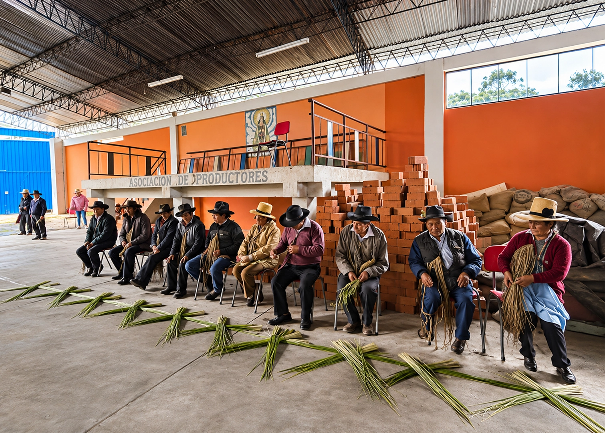
La investigación de Frida Segura Urrunaga sobre el periodo 1942–2015 describe la convivencia de autoridades comunales y estatales. Para planificar una intervención hoy, conviene identificar con los usuarios quién utiliza cada sistema, quién se encarga de su mantenimiento y qué acuerdos están vigentes.
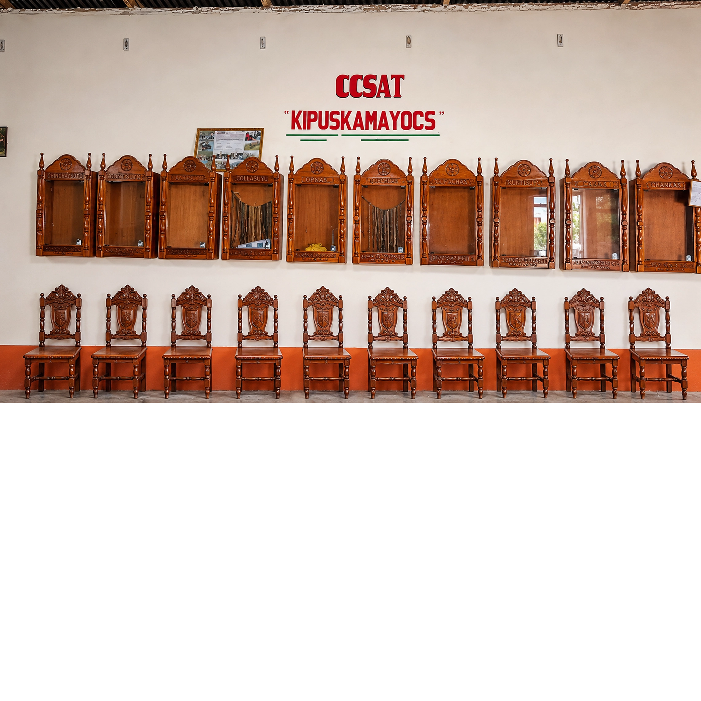
Segura Urrunaga, PUCP (2017) · Ministerio de Cultura, RVM 007-2018
Quipus y shicras: patrimonio ligado a la vida comunal
Los quipus representan a las parcialidades y las shicras acompañan el trabajo y las celebraciones de Tupicocha.
Ampliar la lectura
Quipus: emblemas de las parcialidades
En Tupicocha, cada parcialidad conserva su quipu. Los presidentes lo portan como insignia del cargo. En la Huayrona, los presidentes salientes entregan los quipus a sus sucesores durante el cambio de autoridades. Ese uso vincula los cordeles, que sirvieron para registrar información, con la representación de cada parcialidad.
En 2019, el Ministerio de Cultura declaró Patrimonio Cultural de la Nación la ritualidad y el uso social de estos quipus.
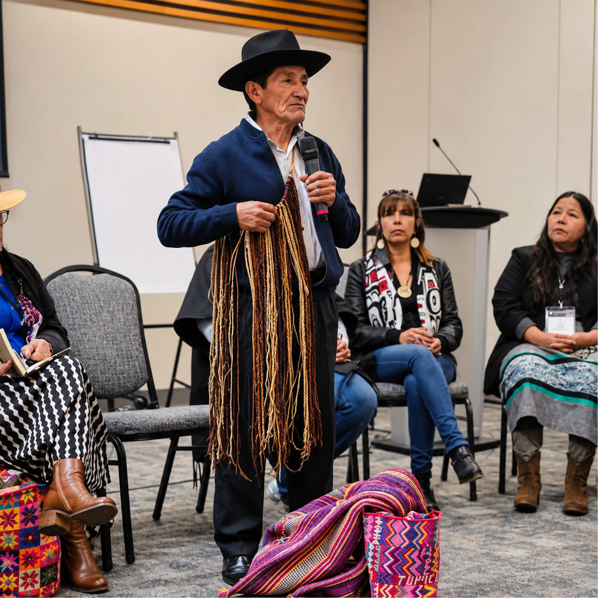
Ministerio de Cultura · RVM 236-2019
Shicras: bolsas de maguey tejidas a mano
Las tejedoras machacan las hojas de maguey y luego lavan y secan las hebras. La fibra preparada se conoce localmente como casca. Con ella tejen las shicras a mano y transmiten sus diseños entre generaciones. Las bolsas grandes se han usado para transportar productos agrícolas. Las pequeñas llevan alimentos u ofrendas en celebraciones, como la champería o fiesta del agua.
En 2018, el Ministerio de Cultura reconoció los saberes, las prácticas y los rituales asociados a su tejido y uso en Tupicocha, Santiago de Tuna y San Bartolomé.
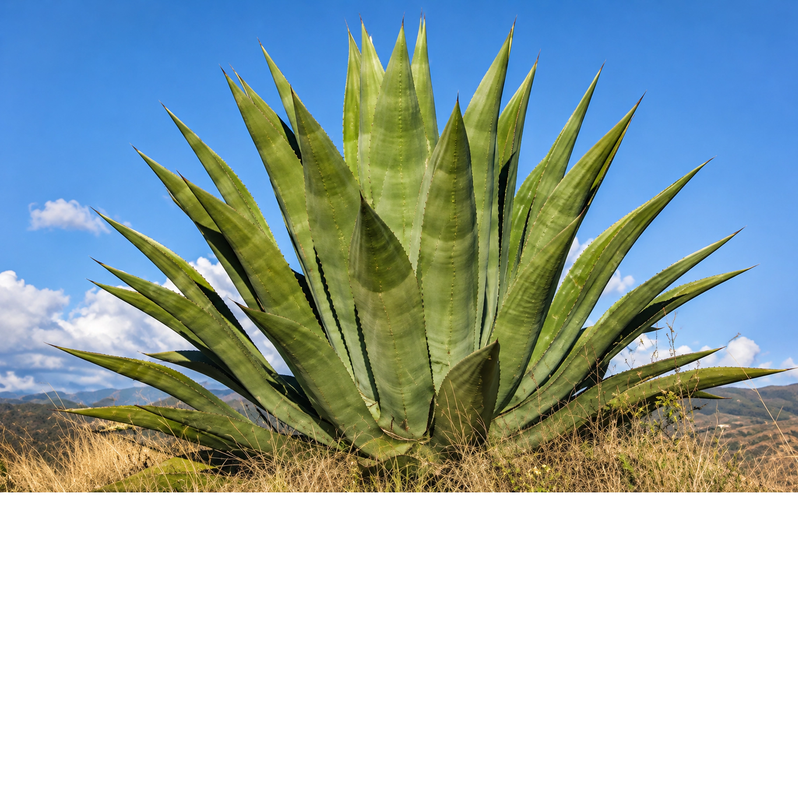
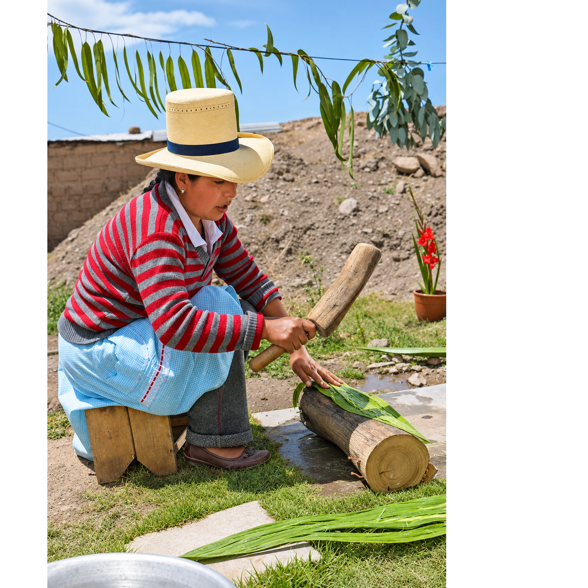
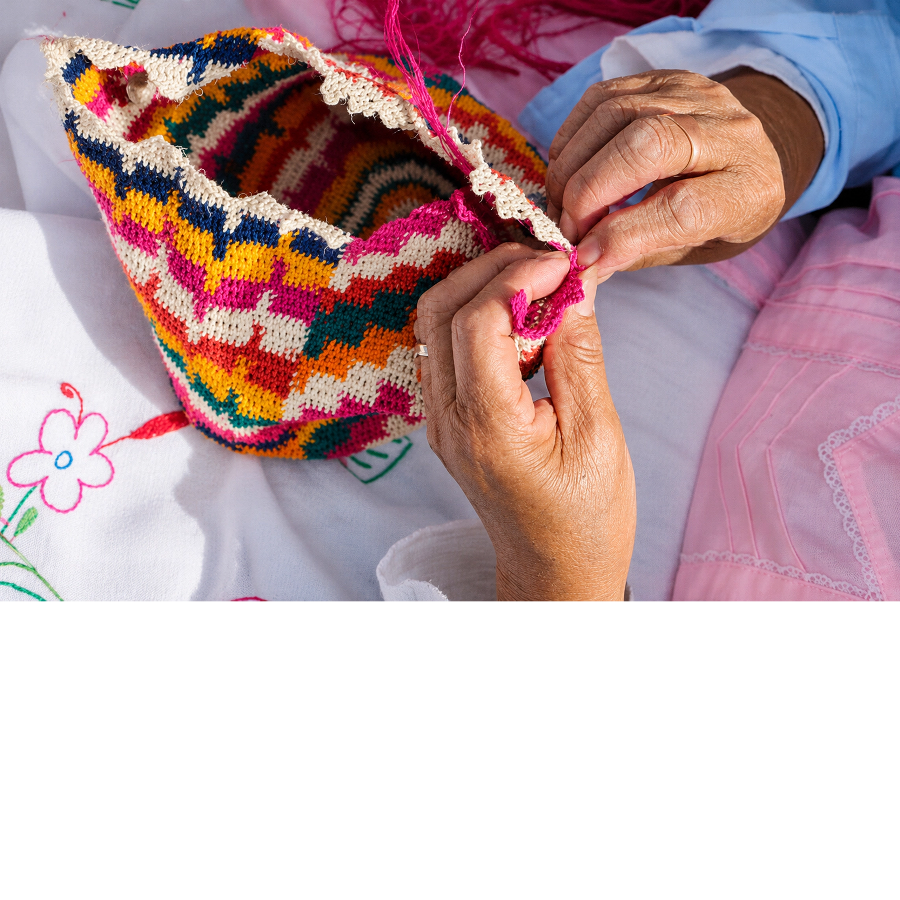
Imágenes de referencia aportadas para el visor.
Amunas y memoria del manejo del agua
Las amunas aprovechan el agua que baja por las quebradas. Mantenerlas exige conocer el terreno y organizar el trabajo.
Ampliar la lectura
Una amuna desvía parte del agua de una quebrada por canales hacia zonas donde puede infiltrarse. La captación, el recorrido del canal y el terreno que recibe el agua forman parte del mismo sistema.
En San Andrés de Tupicocha, los testimonios recogidos en 2015 para Ecos de Huarochirí muestran que saber por dónde conducir el agua y cómo cuidar los canales forma parte de la memoria de la comunidad.
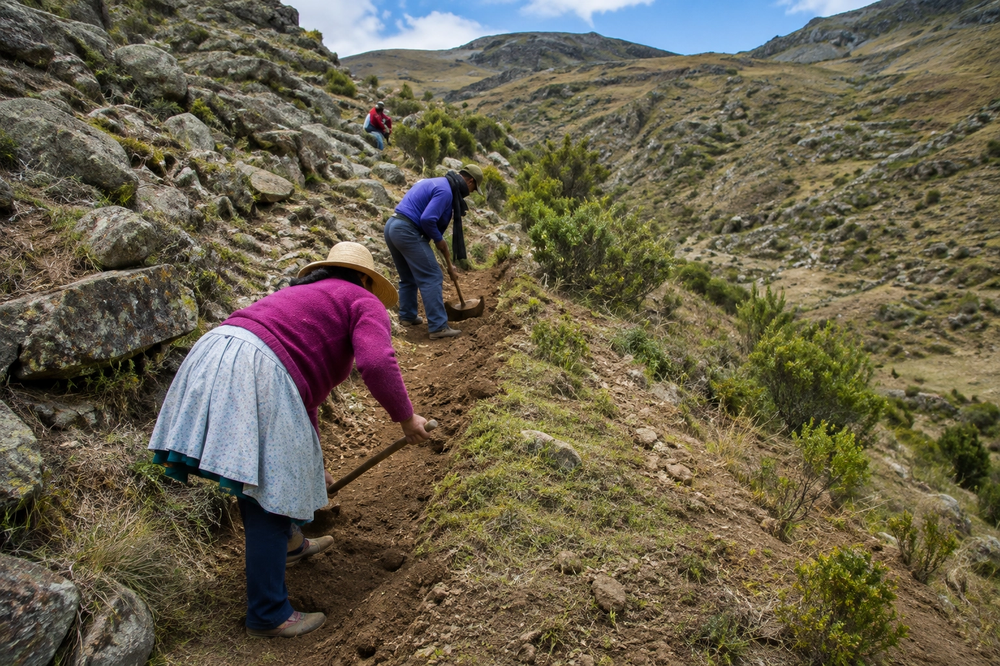
El visor reúne diez posibles trazos de canales o amunas identificados en imágenes del 5 de noviembre de 2023. Son un punto de partida para recorrerlos con los usuarios locales y confirmar cómo los llaman, de dónde reciben el agua, adónde la conducen y quién los mantiene.
Qochas, reservorios y adaptación tecnológica
En Tupicocha, algunas obras favorecen la infiltración del agua de lluvia y otras la almacenan para el riego.
Ampliar la lectura
Infiltrar en la cabecera de Sansare
Aquafondo documentó en Tupicocha qochas construidas en depresiones del terreno, con un fondo permeable y un dique de tierra con núcleo de arcilla. En su tesis de 2026, Erick Antiporta Peñaloza estudió tres qochas de la cabecera de Sansare. La superficie que aporta escorrentía y la permeabilidad del fondo ayudaron a explicar por qué dos retuvieron agua por poco tiempo y la tercera la infiltró rápidamente. En esta última, el muestreo isotópico no permitió confirmar un aporte claro a los manantiales cercanos.
Aquafondo, «Construcción de Ccochas en San Andrés de Tupicocha» (2018) · Antiporta Peñaloza, tesis de maestría, UNALM (2026), cap. V · Qochas CUBHIC 2.0 (2022)
Almacenar para el riego en Chinchagoza
La nota del 3 de enero de 2026 sobre la inauguración del reservorio Amuna Tagana reportó una capacidad cercana a 13 000 m³, con riego previsto para 74 ha y más de 60 productores. La nota ubica el geotextil y la geomembrana en la pared. Para saber si también se revistió el fondo y cuánto se entrega efectivamente en época seca, hacen falta planos o registros de operación.
AgroPerú, reporte de inauguración (2026) · Registro de adquisición de geomembrana y geotextil (2024)
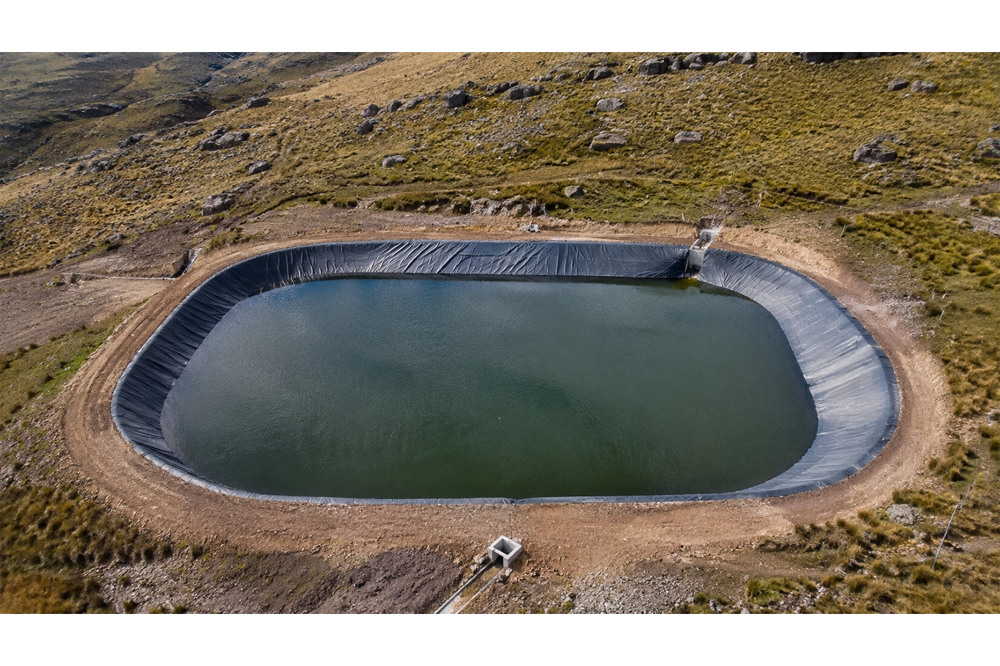
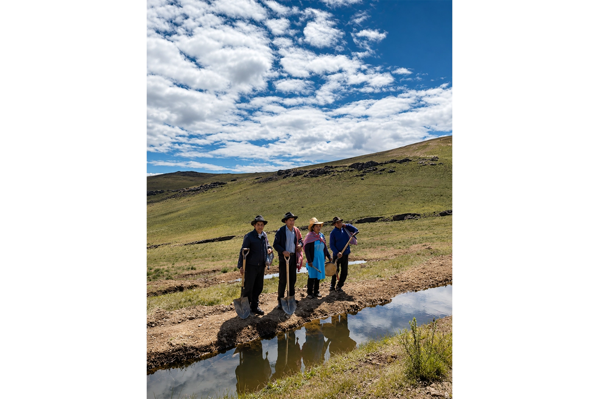
Qué muestra el inventario
El grupo delimitó en imágenes del 5 de noviembre de 2023 21 depósitos candidatos dentro del área de influencia indirecta (AII) y 16 fuera. Para asociarlos con obras como Tagana y priorizar el mantenimiento, falta confirmar en campo los nombres, el revestimiento, las entradas y salidas de agua, y quién usa y mantiene cada estructura. El contorno visible permite estimar la superficie, mientras que el volumen útil requiere datos de profundidad y nivel de agua.
Celebraciones, faenas y transmisión de saberes
En Tupicocha, la Huayrona marca el relevo de autoridades comunales y la champería vincula la fiesta del agua con el trabajo colectivo.
Ampliar la lectura
La Huayrona y el relevo de autoridades
La Huayrona se celebra tradicionalmente el 2 y 3 de enero. En la reunión comunal, quienes dejan la presidencia de las parcialidades entregan el quipu a sus sucesores como emblema del cargo. Las shicras se usan para llevar ofrendas y también acompañan otras celebraciones, como la fiesta de las Cruces y el Corpus Christi.
Ministerio de Cultura · RVM 007-2018 · RVM 236-2019
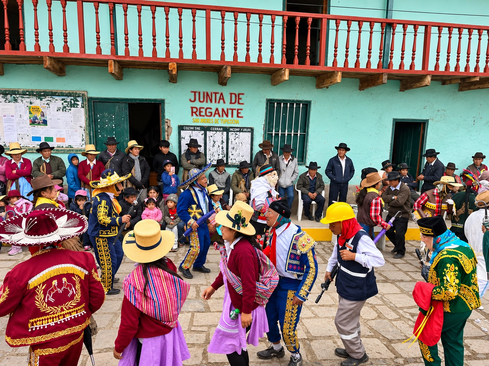
La champería y el cuidado del agua
La declaratoria de las shicras recoge su uso en los convites de la champería, o fiesta del agua, y en las labores de limpieza de canales y amunas. También describe a los waris, conocidos como dueños del agua, vinculados a la limpieza de las amunas de Qaqasika. En un reportaje de 2025, el presidente comunal relató que las parcialidades limpian sus tramos antes de las lluvias y que la comunidad convoca una faena general cuando se activan las quebradas.
Ministerio de Cultura · RVM 007-2018 · Actualidad Ambiental · entrevista de 2025
Aprender durante las faenas
Una forma de apoyar la transmisión de saberes es acordar con la comunidad recorridos y jornadas en las que distintas generaciones puedan reconocer los tramos, aprender cómo se limpian y registrar quiénes los mantienen. Las fechas y responsabilidades de cada jornada se acuerdan con quienes participan.